); ?>/assets/page-2/banner-image01_sp.jpg)


羽根のように軽やかに
いちばん通いやすく、
分かりやすい
クリニックへ。
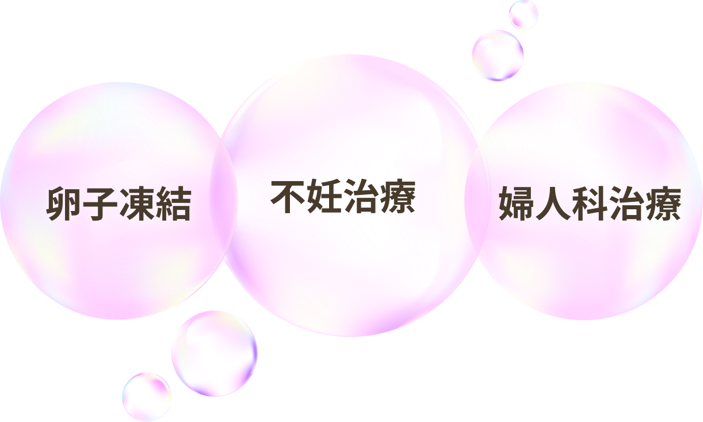
赤坂駅 徒歩15秒
赤坂見附駅 徒歩6分
溜池山王駅 徒歩7分
 ); ?>/assets/img/greeting-image.jpg)
ホームページをご覧いただき、ありがとうございます。2026年5月より長谷川レディースクリニック赤坂の院長を拝命いたしました上野啓子と申します。
大学病院や様々なクリニックでの経験を通じて、産婦人科は他の科と異なり、大変プライベートな悩みや身体のことをご相談いただく診療科であると実感しております。私自身、内診台での診察を受ける時はやはり緊張いたします。時に、友人や家族にも相談しにくいことをお話いただくからこそ、最新の知見とエビデンスを基に、お一人おひとりの生活スタイルに合わせた治療を安心して受けていただけるよう心がけております。

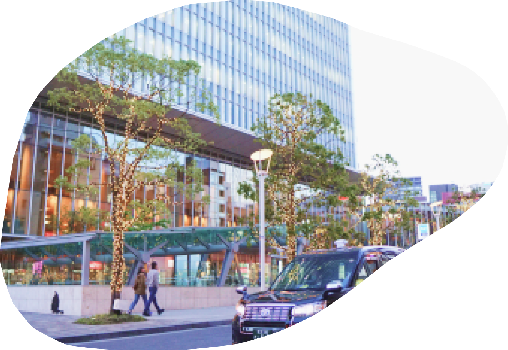
東京メトロ千代田線「赤坂駅」から徒歩15秒、
丸ノ内線・銀座線「赤坂見附駅」から徒歩6分
銀座線、南北線「溜池山王駅」から徒歩7分
当日予約OKで、お仕事終わりに通いやすいクリニックです。
予約なしの受診もOKです。
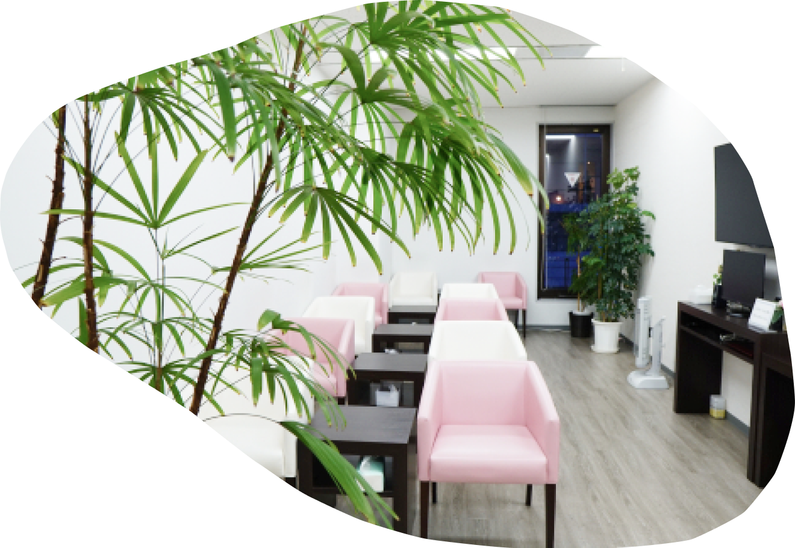
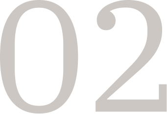
当クリニックでは、「うとうとと眠っている間に終わる麻酔」を
採卵に使うなど、あなたの体への負担を最小限に抑えるケアを
心掛けています。
「何をされるか分からない」という怖さがないよう、当院はプリントや動画を使って、スタッフから懇切丁寧な説明を心がけています。
費用面の不安もしっかりサポートします。
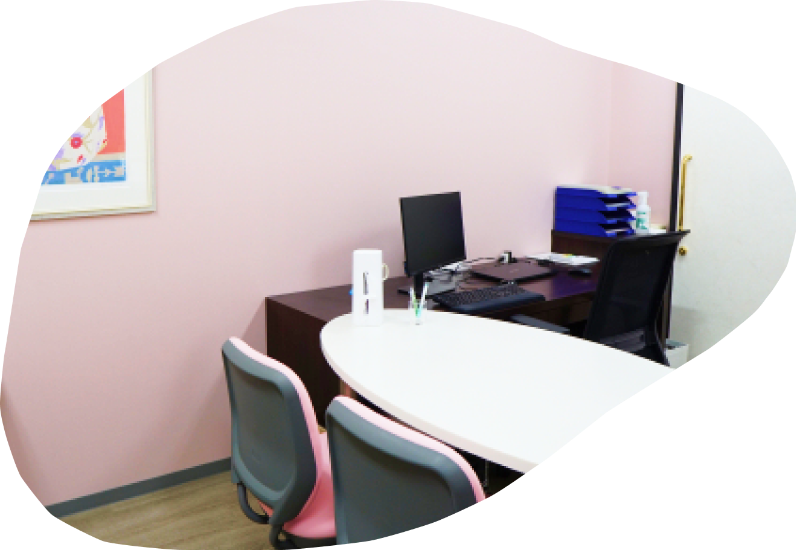
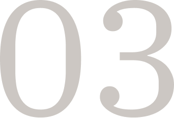
「上の子を連れて行ってもいいのかな？」
そんな不安で、二人目の相談をためらう必要はありません。
当クリニックは子連れでの通院も大歓迎です。
育児と仕事、そして妊活を並走するあなたの歩幅に寄り添い、
安心して治療に専念できる環境を整えています。
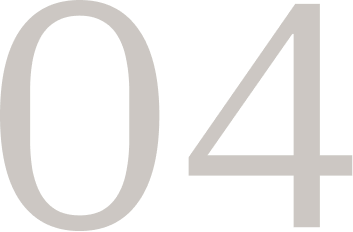
当院は『女性の人生の四季』に寄り添うクリニックとして、思春期から更年期、老年期までの様々な症状に対応しています。更年期障害やがん検診、生理周りの症状、ピル相談、デリケートゾーンの痒み、など何でもご相談ください。女性ヘルスケア専門の女性医師も在籍しており、幅広く対応可能です。
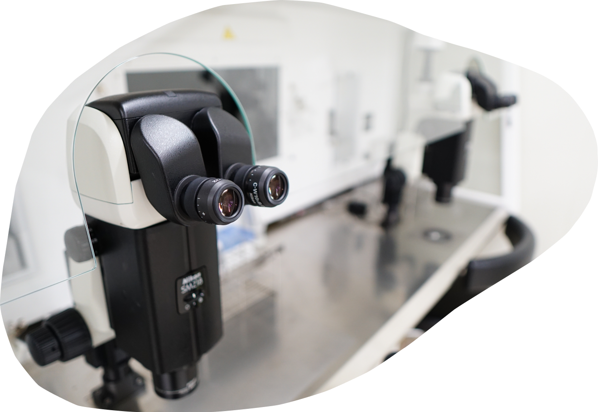
不妊原因の半分は男性因子にあると言われています。そのため、男性にとって敷居が高く、なかなか相談しにくいED、射精障害なども素早く的確な対応が可能です。カップル同時に検査・治療を効率よく進められます。男性お一人での診察も可能です。お気軽にお越しください。
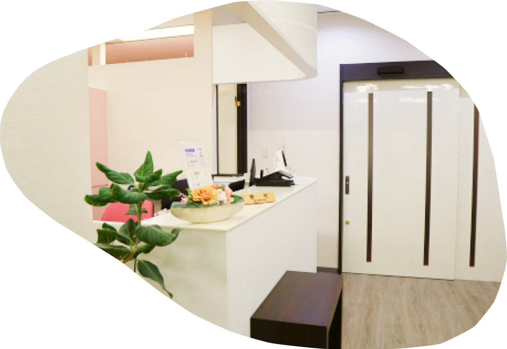
当院は長谷川レディースクリニックグループの橋本・淵野辺院と連携して婦人科治療および不妊治療を行なっています。3つの施設で連携して、検査結果や治療方針の共有が可能です。
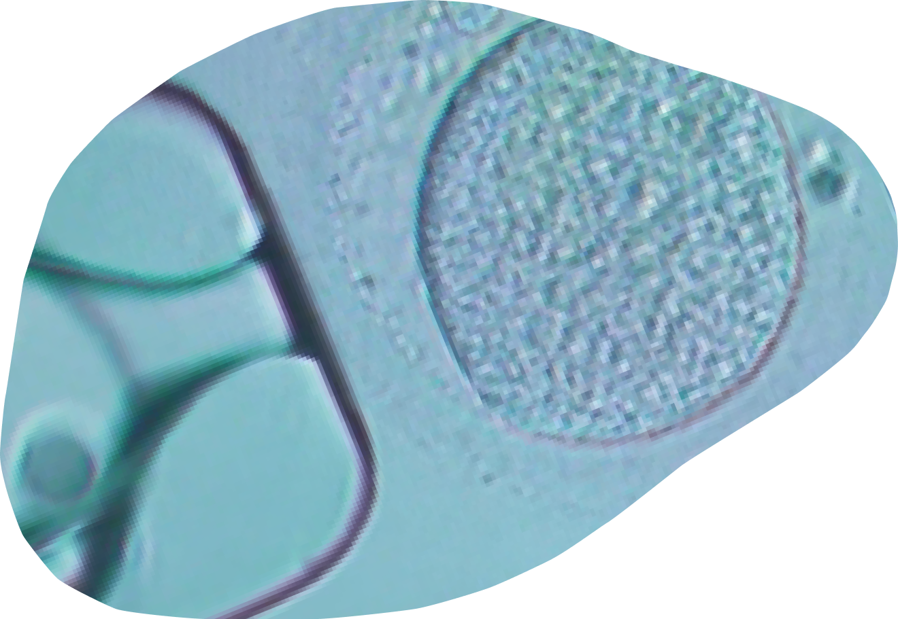
当院は患者様のライフプランを第一に尊重した医療を提供します。 『まだ妊娠予定は無いけど、将来の妊娠のために何かできることを知りたい』など、妊娠能力に関する様々な検査や栄養相談、ブライダルチェックを通して、患者様のこれからのライフプランを総合的に考えることを大事にしております。未婚女性の方の卵子凍結も可能です。
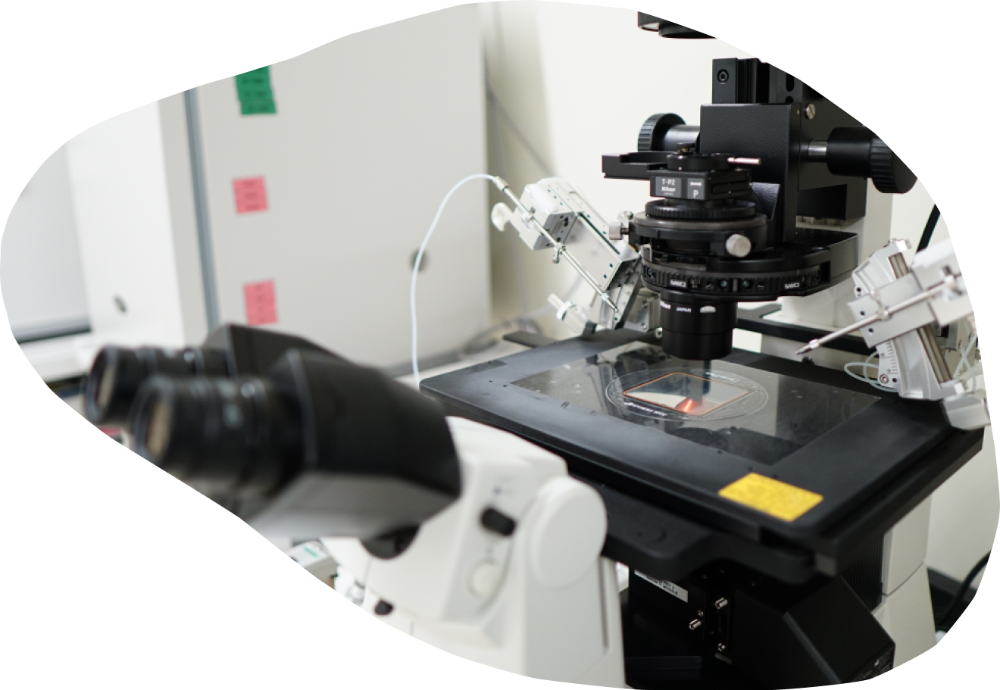
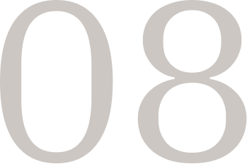
当グループは25年間で数多くの妊娠をお手伝いしてきました。胚へのストレスを最小限に抑える「タイムラプス・インキュベーター」をはじめ、世界水準の高度生殖医療設備を完備。
大学病院で長年経験を積んだ医師・培養士・看護師により確かな成果と信頼できる治療を実現しています。